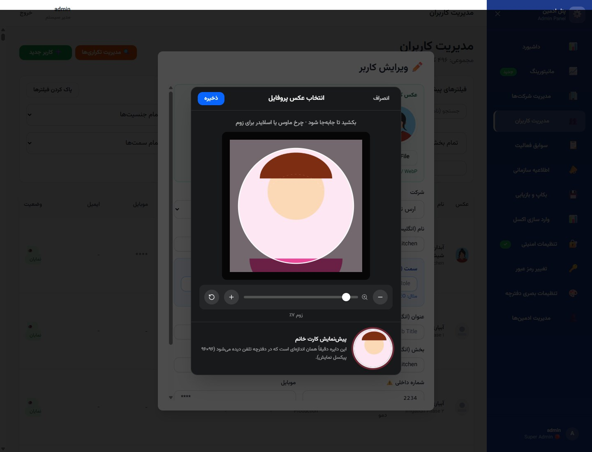
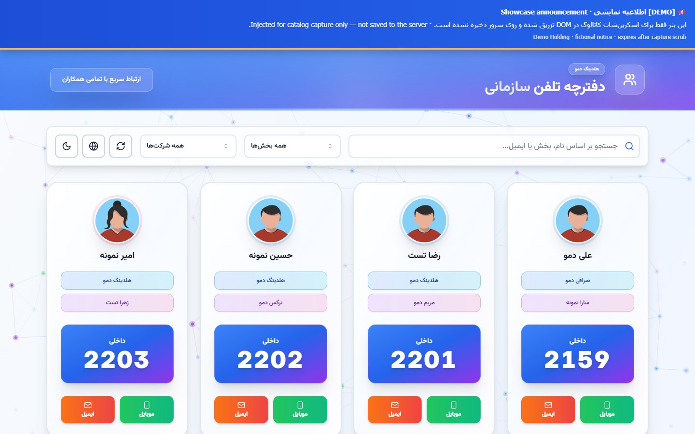

Enterprise Directory · On‑prem · Staff + Admin tour
دفترچه تلفن سازمانی · آنپریم · تور کاربری و ادمین
Who’s who across the holding — searchable, current, under IT control
چه کسی کجاست در هلدینگ — قابلجستجو، بهروز، زیر کنترل IT
The single source of truth for employee profiles in multi‑company holdings: find people by name or department, see a photo on the card, and reach them by extension, mobile, or email under privacy rules — no stale Excel. Operators publish holding notices, see usage, import from Excel, back up and restore, and harden access with 2FA. On‑prem Persian RTL PWA. Product surfaces only; implementation stays private.
منبع واحد پروفایل کارکنان برای هلدینگهای چندشرکتی: با نام یا بخش پیدا کنید، عکس روی کارت ببینید و با داخلی، موبایل یا ایمیل — زیر کنترل حریم — تماس بگیرید؛ نه اکسل کهنه. اپراتورها اطلاعیه هلدینگ منتشر میکنند، مصرف را میبینند، از اکسل وارد میکنند، بکاپ و بازیابی میگیرند و با ۲FA دسترسی را محکم میکنند. PWA فارسی راستبهچپ آنپریم. فقط سطح محصول؛ پیادهسازی خصوصی میماند.
Built for holding IT that needs a trusted who’s‑who across companies — on‑prem, Persian RTL PWA — not a cloud CRM contacts list or a spreadsheet that drifts. Privacy for mobile and email stays with operators.
برای IT هلدینگ که به دفترچهٔ معتبر «چه کسی کجاست» در چند شرکت نیاز دارد — آنپریم، PWA فارسی راستبهچپ — نه لیست مخاطبین CRM ابری و نه اکسلی که کهنه میشود. حریم موبایل و ایمیل در اختیار اپراتور است.
No more stale lists. Live search, filters, and a multi‑company tree — always current under IT, without reprint cycles.
vs generic CRM contacts
A who’s‑who for staff, not a sales pipeline. Extensions, privacy, and org context on every card.
On‑prem holding fit
Unify silos inside the org: notices, usage visibility, Excel intake, backup & restore, and 2FA — owned by IT.
در برابر اکسل / PDF ثابت
دیگر لیست کهنه نه. جستجوی زنده، فیلتر و درخت چندشرکتی — همیشه بهروز زیر IT، بدون چاپ مجدد.
در برابر مخاطبین CRM عمومی
دفترچهٔ «چه کسی کجاست» برای همکاران، نه پایپلاین فروش. داخلی، حریم و بافت سازمانی روی هر کارت.
مناسب هلدینگ آنپریم
سیلوها را داخل سازمان یکی کنید: اطلاعیه، دید مصرف، ورود اکسل، بکاپ و بازیابی، و ۲FA — تحت مالکیت IT.
Anonymized deployment shots.
Names, companies, phones, emails, and IPs were replaced with fictional demo data before capture — sharp frames, no blur.
UI structure, feature set, and navigation are real. Same public‑window pattern as
Atlas,
AftabPulse,
Taradod Nexus.
اسکرینهای ناشناسسازیشده.
نامها، شرکتها، تلفنها، ایمیلها و IPها قبل از اسکرین با دادهٔ دمو عوض شدهاند — فریم واضح، بدون بلور.
ساختار UI، قابلیتها و ناوبری واقعیاند. همان الگوی پنجرهٔ عمومی
Atlas،
AftabPulse و
Taradod Nexus.
18 screens۱۸ صفحهStaff + Admin tourتور کاربری و ادمین
Staff + Adminکاربری + ادمینDirectory & governanceدفترچه و حاکمیت
2FAAuthenticator + recoveryAuthenticator و بازیابی
On-premآنپریمPersian RTL PWAPWA فارسی RTL
01 / 18 · Staff · Key capability
۰۱ / ۱۸ · کاربری · قابلیت کلیدی
Staff directory — find anyone, reach them now
دفترچه کارکنان — هر کسی را پیدا کنید، همین حالا برسید
Photo on the cardعکس روی کارتMobile & emailموبایل و ایمیلMulti‑company searchجستجوی چندشرکتی
Search by name, department, or email; filter by company. Each card is a profile: photo when on file, extension, and — when privacy allows — one‑tap email and mobile. The who’s‑who colleagues open every day.
جستجو با نام، بخش یا ایمیل؛ فیلتر شرکت. هر کارت یک پروفایل است: عکس در صورت ثبت، داخلی، و وقتی حریم اجازه دهد ایمیل و موبایل با یک لمس. همان «چه کسی کجاست» که همکاران هر روز باز میکنند.
Card identities swapped to fictional demo people and companies before capture.
هویت روی کارتها قبل از اسکرین با دادهٔ دمو عوض شده است.
Full people table with filters, new‑user flow, duplicate management, and per‑row edit, visibility, and delete. Edit opens the personnel photo flow (screens 16–17).
جدول کامل افراد با فیلتر، کاربر جدید، مدیریت تکراریها، و اکشن ویرایش، نمایش و حذف. از ویرایش به جریان عکس پرسنل میروید (صفحات ۱۶–۱۷).
See what people search, when they open the book, and on which devices — confidence for IT and leadership that the directory is alive, not a forgotten intranet page.
ببینید چه چیزی جستجو میشود، کی دفترچه باز میشود و روی چه دستگاهی — اطمینان برای IT و مدیریت که دفترچه زنده است، نه صفحهٔ فراموششدهٔ اینترانت.
JSON exportخروجی JSONCompanies · people · noticesشرکت · افراد · اطلاعیه
One Backup & Restore admin page. This frame highlights export: download a JSON snapshot of companies, employees, notices, and admin metadata for disaster recovery.
یک صفحهٔ بکاپ و بازیابی. این فریم روی خروجی تمرکز دارد: دانلود اسنپشات JSON از شرکتها، کارمندان، اطلاعیهها و متادیتای ادمین برای بازیابی.
Personnel photo — turn a name into a trusted profile
عکس پرسنل — نام را به پروفایل قابلاعتماد تبدیل کنید
JPEG / PNG / WebPMax 2 MBحداکثر ۲ MBOn the staff cardروی کارت کارکنان
From the people table, edit a person and attach a profile photo (JPEG/PNG/WebP, max 2 MB). That face becomes the avatar colleagues see — photos and departments as trust signals, not a faceless list.
از جدول افراد، فرد را ویرایش کنید و عکس پروفایل پیوست کنید (JPEG/PNG/WebP، حداکثر ۲ MB). همان چهره آواتاری است که همکاران میبینند — عکس و بخش بهعنوان نشانهٔ اعتماد، نه لیست بیچهره.
Drag to frameجابهجایی کادرZoom wheel / sliderزوم اسکرول/اسلایدرCircular card previewپیشنمایش دایرهایServer WebP · max 2 MBWebP سرور · حداکثر ۲ MB
Before upload, a crop modal lets you drag to frame, zoom with the wheel or slider, and preview the circular card crop. The saved image is compressed to WebP on the server — upload limit remains 2 MB.
قبل از آپلود، مودال برش امکان جابهجایی، زوم با اسکرول یا اسلایدر و پیشنمایش دایرهای کارت را میدهد؛ تصویر روی سرور به WebP فشرده میشود — سقف آپلود ۲ MB است.

18 / 18 · Staff · Key capability
۱۸ / ۱۸ · کاربری · قابلیت کلیدی
Staff banner — notices where work already happens
بنر کاربری — اطلاعیه همانجا که کار میشود
Same directory as 01همان دفترچه فریم ۰۱Active holding noticeاطلاعیه فعال هلدینگAnonymized demo copyمتن دموی ناشناس
How staff see holding notices: a clear banner on the directory. Complements the admin composer on frame 09 — compose there, appear here.
نحوهٔ دیدن اطلاعیه توسط همکاران: بنر واضح روی دفترچه. مکمل ترکیبکنندهٔ ادمین در فریم ۰۹ — آنجا بنویسید، اینجا دیده شود.

Demo notice text for the catalog only — identities and copy are fictional.
متن اطلاعیه فقط برای کاتالوگ — هویتها و متن خیالیاند.